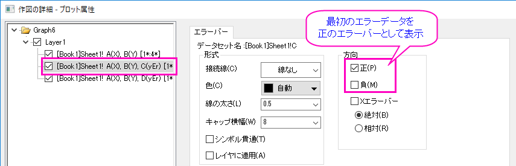
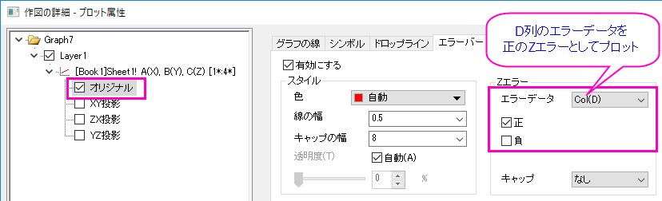
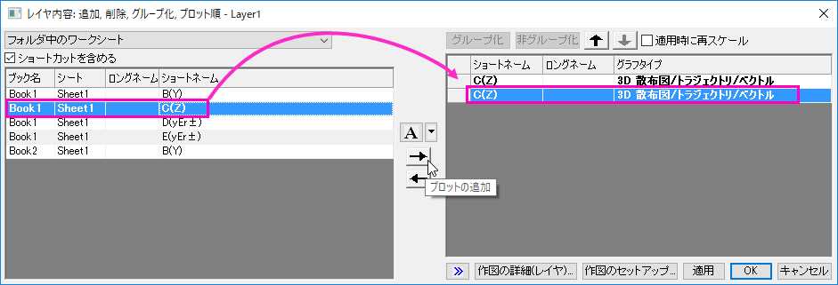
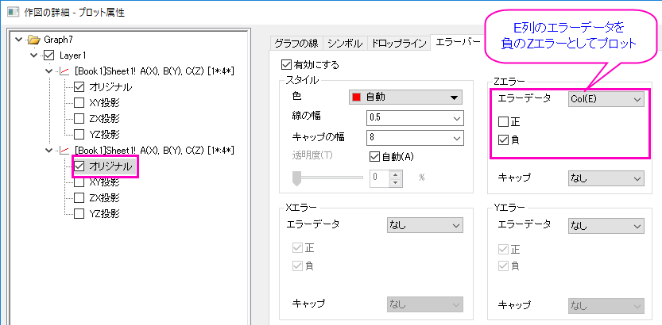

FAQ-889 2Dまたは3Dプロットに非対称のエラーバーを追加するにはどうすればよいですか？
Asymmetric-ErrorBars
最終更新日:2017/9/13
2Dまたは3Dグラフに非対称のエラーバーを追加したいことがあります。ここで言う非対称エラーバーとは、正と負の方向で異なる長さのエラーバーのことです。
2Dグラフでは、XY(yEr+)(yEr-)ワークシートデータを使って、Y方向の非対称なエラーバーを追加できます。
- 最後の2列をYエラーの列属性を設定します。前列を選択して、折れ線/散布図/線+シンボルグラフを作図します。
- プロット上でダブルクリックして、作図の詳細ダイアログを開きます。左パネルで2番目および3番目のプロットを選択して、エラーバータブで、エラーバーを表示したくない方向の選択を外します。
- 
行列シートの3つのオブジェクト(1つはプロットデータ、後の2つはエラーデータ)または、XYZ(zEr+)(zEr-)ワークシートデータの3Dグラフの場合、2Dグラフのように2つのエラーデータを同時に描くことはできません。しかし、次のようにすることでZ方向の非対称なエラーバーを追加できます。
次の注意点があります。
- 行列データでは、Z方向エラーバー付き3Dグラフしか作図できません。
- ワークシートデータでは、X、Y、Zのどの方向でもエラーバー付き3Dグラフを作図できます。
|
- 最初の行列オブジェクトまたはXYZ(zEr+)ワークシートデータをアクティブにして、作図> 3D: 線+シンボル: 3D散布図+エラーバーを選択して、通常のエラーバー付き散布図を作成します。
- プロット上でダブルクリックして、作図の詳細ダイアログを開きます。左パネルでオリジナルを選択して、エラーバータブを開きます。Zエラーの負のチェックを外します。
- 
- グラフ操作: レイヤ内容メニューを選択してレイヤ内容ダイアログを開き、最初のオブジェクトまたはcol(c)を3D散布図として再度追加します。
- 
- プロットをダブルクリックして、作図の詳細ダイアログを再び開きます。左パネルで2番目のプロットのオリジナルを選択し、エラーバータブでエラーデータをMat(3) または Col(E)(zEr-の列)にし、正のチェックを外します。
- 
- 同じグラフレイヤに同じ行列オブジェクト/XYZデータを3D散布図として二度作図しているので、2つのプロットを完全に重ね合わせて1つのプロットにしか見えないように設定する必要がありかもしれません。
キーワード:非対称なエラー, エラーバー, 正のエラー, 負のエラー